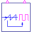
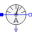
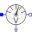
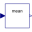
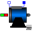
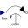
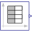
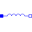

HBridge_DC_DriveH bridge DC/DC converter with DC drive |
|
Diagram
{kind=link}
Information
This information is part of the Modelica Standard Library maintained by the Modelica Association.
This example of an H bridge with DC drive demonstrates the operation of the DC machine in four quadrants.
The DC output voltage is equal to 2 * (dutyCycle - 0.5) times the input voltage.
| start time (s) | machine speed | machine torque | mode |
|---|---|---|---|
| 0 | zero | zero | |
| 3 | positive | zero | |
| 6 | positive | positive | motor |
| 9.5 | positive | negative | generator |
| 12.5 | negative | negative | motor |
| 15.5 | negative | positive | generator |
| 19 | negative | zero | |
| 22 | zero | zero |
Plot machine current dcpm.ia, averaged current meanCurrent.y, machine speed dcpm.wMechanical, averaged machine speed dcpm.va and torque dcpm.tauElectrical.
Parameters (6)
| f |
Value: 1000 Type: Frequency (Hz) Description: Switching frequency |
|---|---|
| Ld |
Value: 3 * dcpmData.La Type: Inductance (H) Description: Smoothing inductance |
| tauNominal |
Value: dcpmData.ViNominal * dcpmData.IaNominal / dcpmData.wNominal Type: Torque (N·m) Description: Nominal torque |
| dMin |
Value: 0.2 Type: Real Description: Minimum duty cycle |
| dMax |
Value: 1 - dMin Type: Real Description: Maximum duty cycle |
| dcpmData |
Value: Type: DcPermanentMagnetData Description: Data record of PM excited DC machine |
Components (14)
| hbridge |
Type: HBridge |
|
|---|---|---|
| constantVoltage |
Type: ConstantVoltage |
|
|  | signalPWM |
Type: SignalPWM |
| ground |
Type: Ground |
|
|  | currentSensor |
Type: CurrentSensor |
|  | voltageSensor |
Type: VoltageSensor |
|  | meanCurrent |
Type: Mean |
| meanVoltage |
Type: Mean |
|
|  | dcpm |
Type: DC_PermanentMagnet |
| dcpmData |
Type: DcPermanentMagnetData Description: Data record of PM excited DC machine |
|
|  | torque |
Type: Torque |
|  | torqueTable |
Type: TimeTable |
| dutyCycleTable |
Type: TimeTable |
|
|  | inductor |
Type: Inductor |